FROG
Friendly Rounds Of Generation
Portadas infantiles generativas con feedback humano: de un boceto y una historia a cinco propuestas.
Andrea Coa · Jimena Gurbillon · Maria Surco
Bihonda Epiquien · Nayeli Guzman
Proyecto 2 · Planificación y Toma de Decisiones en IA · UTEC · Noviembre 2026
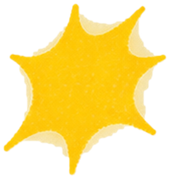
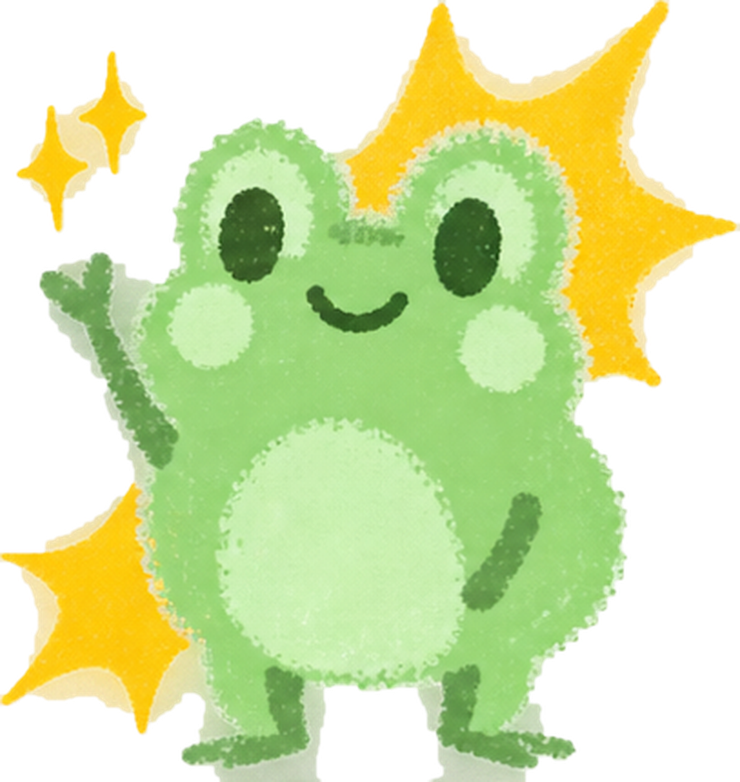
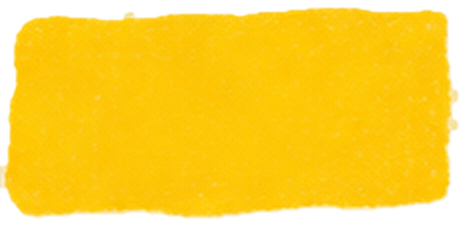
Runa
la mascota de FROG
Quien escribe un cuento no siempre puede ilustrarlo
No sabe dibujar bien
Hace dibujos simples, pero sabe lo que quiere contar.
No puede pagar a un ilustrador
No alcanza para cada cuento que escribe para su aula.
La IA genérica no le sirve
Las imágenes no se parecen a su idea ni a su historia, y el título sale mal escrito.
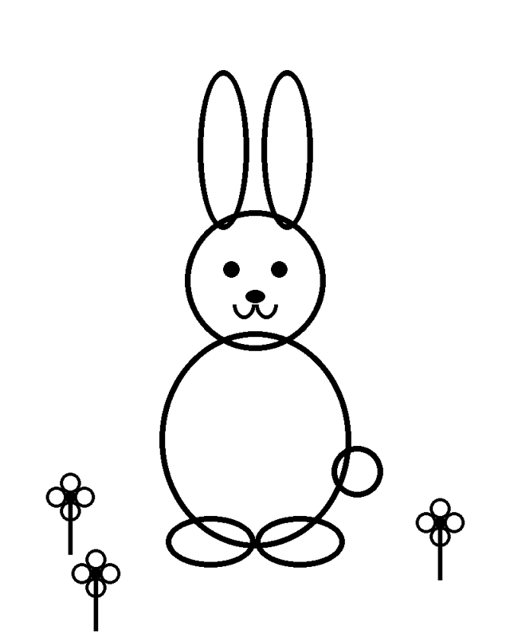
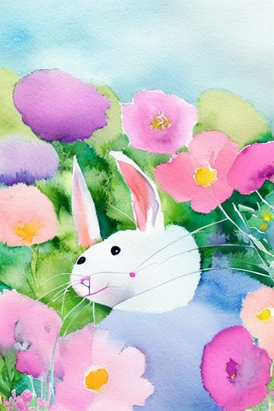
De un boceto y una historia a cinco portadas
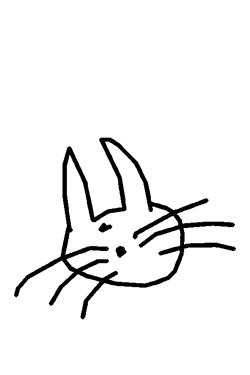
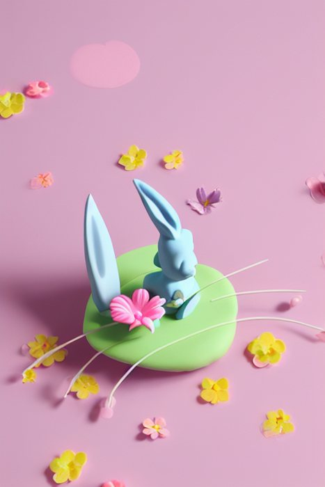
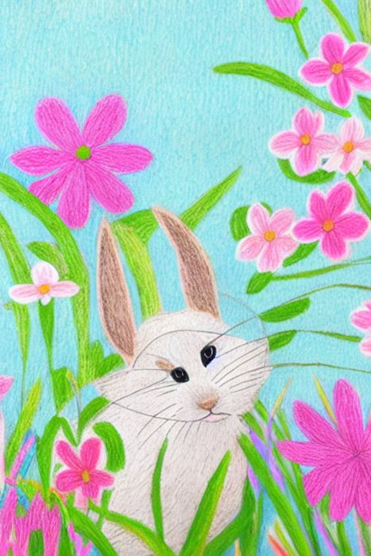
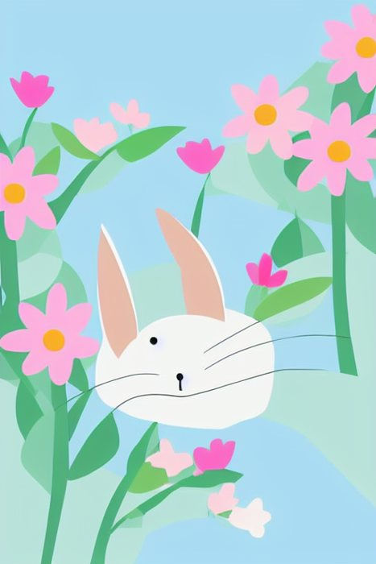
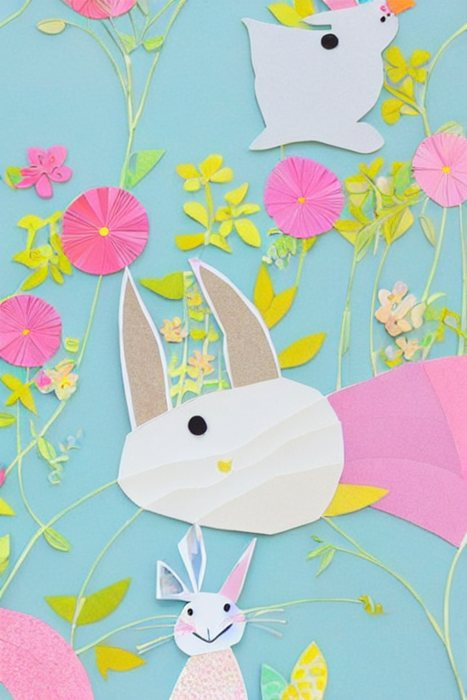
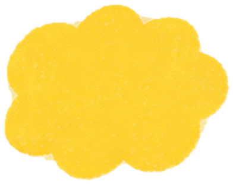
5Dibujas o subes un boceto y cuentas el cuento.
Cada una cambia solo un parámetro.
Con motivo, por portada o por paquete.
Aprende qué valores prefieres (muestreo de Thompson).
Un agente explica lo que pasó.
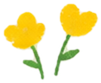
Siete componentes y un registro de cada decisión
boceto + historia
+ título + parámetros
+ guardrails de entrada
+ agente de historia
5 configuraciones
(Thompson, Beta)
+ ControlNet
Motor B: SD-Turbo
+ agente tipográfico
+ render del título
aceptar / rechazar
+ motivo + editar fuente
Registro JSON
parámetros, semillas,
decisiones, motivos
(r < 3)
Qwen2.5 | Phi-3.5
resumen + JSON
el registro?
cambio
de fuente
sí: actualizar preferencias
no
no: reintento (máx. 2)
sí
si fallan los reintentos
rechazo de la
entrada
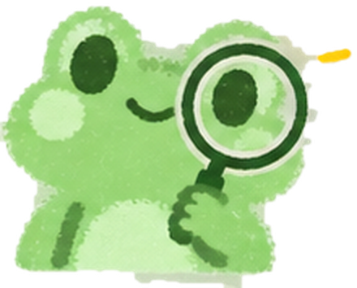
Seis parámetros para personalizar cada portada
Estilo
acuarela · lápices · collage · vectorial · plastilina
Paleta
pastel · cálida · fría · primarios · tierra
Edad
0-3 · 4-6 · 7-9 · 10-12 · sin
Ambiente
alegre · aventura · calma · misterio · humor
Fidelidad al boceto
muy baja · baja · media · alta · muy alta
Zona del título
superior · inferior · ambas · centrada · sin
Una ronda: un parámetro toma sus 5 valores (una portada por valor) y los otros cinco quedan fijos.
El planificador aprende de tus decisiones
- 1
Cada aceptación o rechazo actualiza qué valores prefieres.
- 2
Los parámetros con evidencia se fijan en lo que aceptaste.
- 3
Los demás se eligen al azar para seguir explorando.
- 4
Máximo tres rondas por sesión.
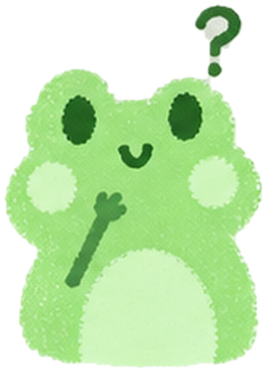
El motor A reinterpreta el boceto; el B lo conserva
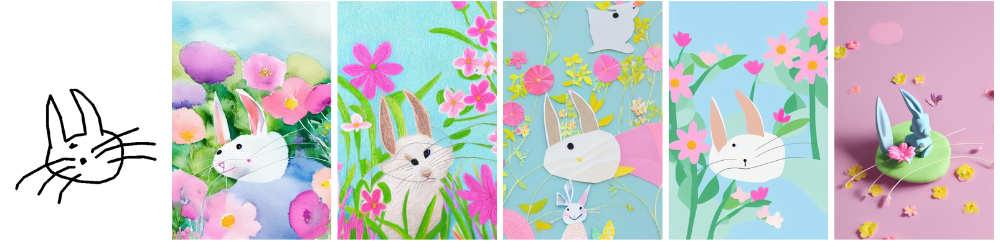
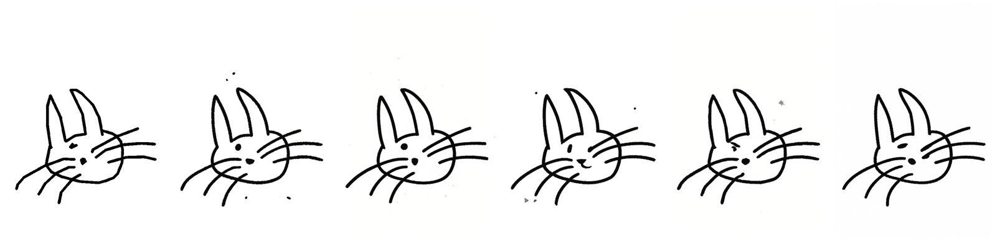
Mismo boceto e historia; una ronda con el eje estilo.
Cara a cara
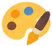
Acierto de estilomás es mejorTres agentes de IA, cada uno con su validador
Agente de historia
Un cuento en español, hasta 500 palabras.
{"personajes":["conejo"],
"objetos":["flores"],
"lugar":"jardin"}
SE VALIDA
Cada personaje y objeto debe aparecer en el texto; lo que no aparece se marca.
Agente tipográfico
Medidas de la zona del título: contraste, bordes y color.
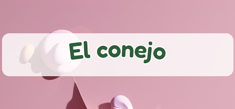
Un renderizador determinista dibuja las letras: el título sale correcto y dentro de los límites por edad.
Agente de resumen
El registro JSON de la sesión.
Ronda 1 (eje: Paleta) Aceptadas: R1-V3 (fría) Rechazadas: R1-V1 (pastel; motivo: colores)SE VALIDA
Contrasta IDs, motivos y parámetros con el registro; reintenta y, si falla, usa una plantilla.
Demostración: de una idea a una portada
5 minutos- 1
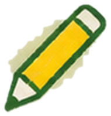
Dibujar o subir el boceto - 2Contar la historia y revisar los elementos
- 3Generar las 5 portadas
- 4Aceptar o rechazar, con motivo
- 5Segunda ronda guiada por tus decisiones
- 6Leer el resumen del agente
La generación tiene cuatro capas de protección
Texto
Lista de bloqueo de violencia, contenido sexual, artistas y personajes con marca.
Foto
Solo dibujos: se rechaza toda foto con el rostro de una persona.
Imagen
CLIP compara cada portada con descriptores de contenido no apto para niños.
Derechos
Estilos genéricos y aviso de que la protección de autor no está garantizada.
20 / 20
entradas adversariales bloqueadas por el filtro de texto
1 de 5 entradas legítimas bloqueada por error (un nombre con marca).
5 de 5 evasiones con eufemismos pasan el filtro de texto; por eso existe el filtro de imagen.
Motor B: SD-Turbo no trae filtro propio; solo lo protege CLIP.
Calidad visual: estilo 93 %, paleta de 69,7 a 79,2 %
93 %
acierto de estilo
meta ≥ 70 % ✓91 %
elemento principal detectado
meta ≥ 80 % ✓79,2 %
paleta en rango (antes 69,7)
meta ≥ 80 % · casi7,8 s
por ronda de 5 portadas
meta < 60 s ✓La paleta, color por color
Cálida y primarios fallaban. Reforzamos su texto en el prompt y repetimos el eje paleta con los mismos 200 pares.
Motor B: paleta 84 % y elemento principal 90 %, porque casi copia el boceto.
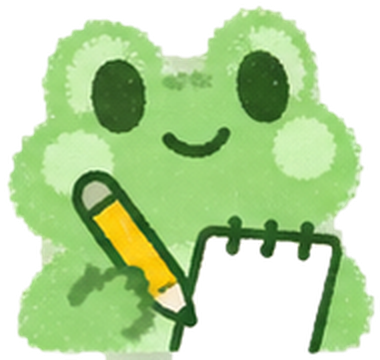
Thompson supera al azar en la ronda 3
43,0 %
aceptación con Thompson en la ronda 3
al azar: 34,8 %500 usuarios simulados.
Resúmenes que coinciden con el registro de la sesión
Qwen 2.5
23 de 27
Phi 3.5
7 de 14
Comprobación automática contra el registro; no evalúa la parte interpretativa.
43,4 % → 17,6 %
error por carácter al leer el título con OCR
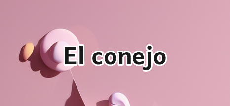
Meta: 5 %. No se cumple: el OCR falla con títulos cortos o con dibujo detrás, aunque a simple vista se leen.
42 de 45 portadas aptas, con una señal de sesgo
Seguridad
42 / 45portadas aptas para niños,
según revisión manual
No aptas: payaso tenebroso, fantasma triste, dragón con miedo a la oscuridad.
Sesgo en 100 figuras
Género percibido
Tono de piel percibido
Una persona anotó cada figura. Cuando el modelo dibuja rasgos, tiende a la piel clara. Es una observación, no una conclusión.
Cinco limitaciones que dejamos a la vista
Agente de historia
59–80 % de precisión
Meta: 90 %. Mejor caso: Qwen en inglés, 80 % (flexible).
Paleta del motor A
70 % → 79 %
Meta: 80 %. Tras reforzar el prompt, «primarios» sigue en 31,5 %.
Legibilidad del título
CER 17,6 %
Meta: 5 %. El OCR falla con títulos cortos o con dibujo detrás.
Filtro de imagen (CLIP)
5 de 10 no aptas
Con 0,25 también bloquea el 1,3 % de las aptas; es un filtro débil.
Evidencia con personas
Pendiente
Entrevistas, estudio con usuarios (E4) y SUS aún no se hacen.
De un boceto a una experiencia creativa
Cinco propuestas comparables
Cada una cambia un parámetro y se explica qué cambió.
Decisiones que se aprovechan
Aceptar y rechazar guía las rondas, con Thompson en hasta tres.
Agentes que se pueden verificar
Historia, tipografía y resumen con validadores deterministas.
Límites de seguridad medidos
Texto, foto, imagen y derechos, con sus fallos a la vista.
Siguiente: entrevistas, estudio con usuarios y SUS, y un filtro de imagen más fuerte, sobre todo para el motor B.
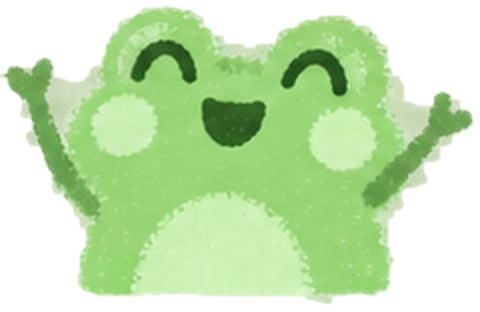
Gracias · ¿preguntas?